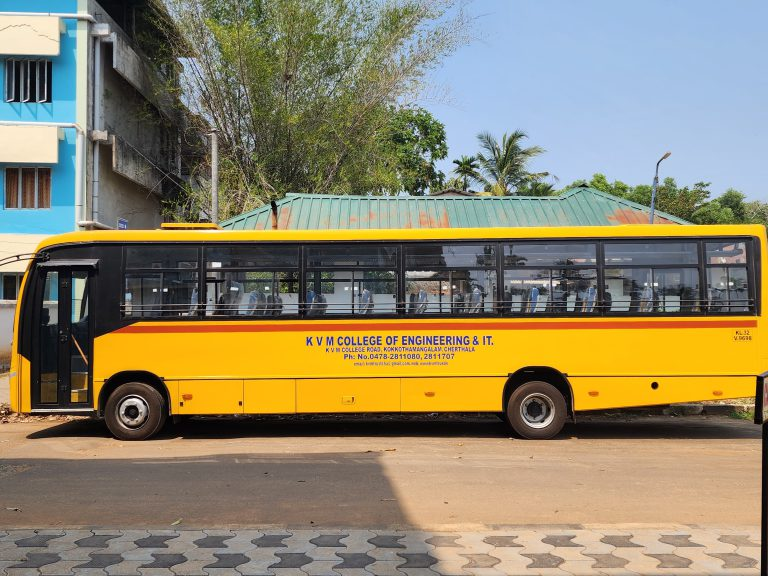

TRANSPORTATION
Bus facility is available from Edappally, Fort Cochin, Arookutty, Haripad,
Thrikkunnapuzha, Thakazhy, Kidangara, Kalarcode, Alappuzha Court(via
Muhamma), Vaikom and Kottayam.
Conveyance
-
Thakazhy Kadavu-Thakazhy temple-Karumady-Ambalappuzha temp[le-Kachery
Mukku-Valanjavazhy-Vandanam- Campus
-
Kalathatt-Aravukad-S D College-YMC-Savakottapalam-Kommady-
Pathirappally-Kalavoor-Kanjikuzhy-KVM Trust - Campus
- Alappuzha Court Jn-Thondankulangara-Kaichoondy-Thalavady-
Komalapuram-Mannanchery-Muhamma-Kayippuram-Puthanangady

Back to home